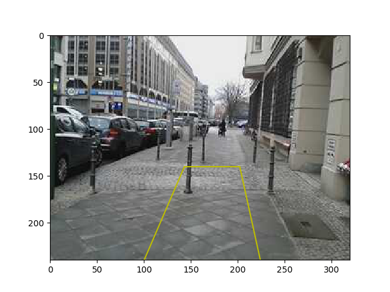
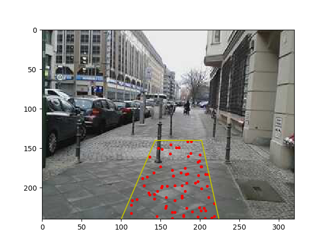
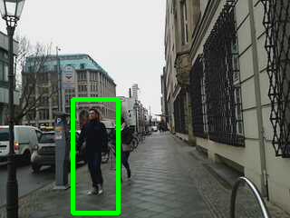
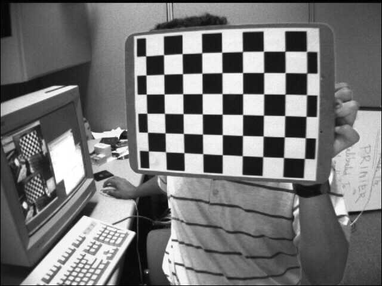
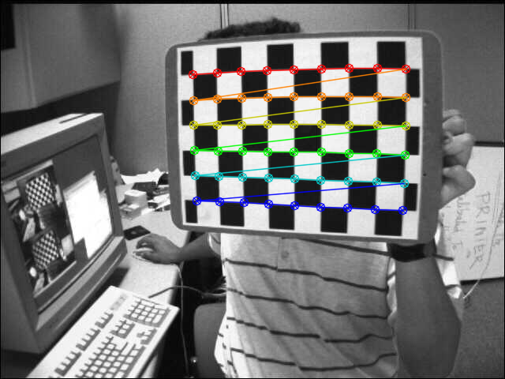
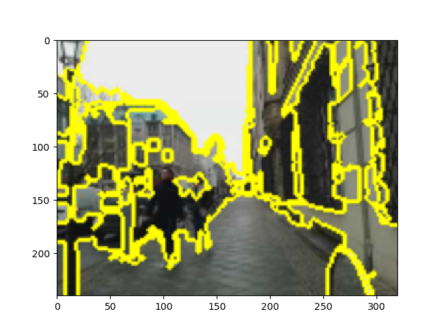

Veri İşlemek
Telefon tarafından toplanan verileri nasıl kullanırız?
import pandas as pd
dir = "./data/mitte4/"
data = np.fromfile(dir + "cam.bin", dtype=np.uint8)
df = pd.read_csv(dir + "sizes.txt",header=None)
df['cum'] = df.cumsum()
df['cum2'] = df.cum.shift(-1)
df.columns = ['x','fr','to']
Herhangi bir video karesini çekip çıkarmak
import io
from PIL import Image
frame = 30
arr = data[int(df.ix[frame]['fr']) : int(df.ix[frame]['to'])]
im = Image.open(io.BytesIO(arr))
im.save('out1.png')
Herhangi zaman anında gittiğimiz yön,
dforient = pd.read_csv(dir + "orientations.txt",header=None,sep=' ')
frame = 50
print str(dforient.ix[frame][1])[:6] + " " + \
str(dforient.ix[frame][2])[:6] + " " + \
str(dforient.ix[frame][3])[:6] + " ",
334.46 0.8803 84.372
GPS
dfgps = pd.read_csv(dir + "gps.txt",header=None,sep=",",\
names=['lat','lon','speed','acc','alt'])
print str(dfgps.ix[frame][0])[:6] + " " + \
str(dfgps.ix[frame][1])[:6] + " " + \
str(dfgps.ix[frame][2])[:6] + " "
52.511 13.390 0.6519
Dört köşesi üzerinden belirtilen bir dörtgeni ekrana basmak.
import util
im = util.get_frame(dir, 105)
quad = np.array([[100,0],[143,100.],[202,100],[224,0]])
h = np.array(im).shape[0]
util.plot_quad(quad, h, 'y')
plt.imshow(im)
plt.savefig('out2.png')

Bazen bu dörtgenin içindeki pikselleri bulmak gerekebilir. Fakat tüm pikselleri de bulmak fazla yük getirebilir, 100x100 boyutundaki "ufak" bir dörtgen içinde bile 10000 piksel vardır, ki üç boyutlu HSV ya da RGB için 30000 veri noktasından bahsediyoruz, en iyisi resim kordinatları içinde tanımlı birörnek (uniform) bir dağılımdan sayılar (kordinatlar) örneklemek, bu kordinatlardan dörtgen içine düşenleri bulmak, ve boylece daha az sayıdaki kordinat kullanmak.
np.random.seed(1)
N = 1000 # orneklenen kordinat sayisi
random_points = np.random.uniform(0, 320, (N, 2)).astype(np.int)
random_points = random_points[random_points[:,1] < 240]
mask = np.array([util.inside_quad(quad, p)[0] for p in random_points])
plt.plot(random_points[mask][:,0], h-random_points[mask][:,1], 'r.')
util.plot_quad(quad, h, 'y')
plt.imshow(im)
plt.savefig('out3.png')

Dörtgen içindeki kordinatların renk değerlerini alıp tüm bu değerlerin histogramını hesaplayabiliriz.
bins=(8, 8, 8)
nim = np.array(im)
nim_quad = nim[random_points[mask][:,1],random_points[mask][:,0]]
H, edges = np.histogramdd(nim_quad, bins=bins, normed=True, range=[(0,255),(0,255),(0,255)])
print 'H', H.shape, 'edges', len(edges)
H (8, 8, 8) edges 3
Bu histogram çok boyutlu, yani üç boyutlu HSV verisi üzerinde (8,8,8) kutuları yarattık, yani elimizde şimdi 888 tane kutu var. Bildiğimiz gibi bir histogram bir olasılıksal dağılımı ayrıksal olarak temsil eder. O zaman bu dağılıma herhangi bir HSV değerinin ne kadar olası olduğunu "sorabiliriz".
def eval(x, H, edges):
i=np.argmax(x[0]<edges[0])
j=np.argmax(x[1]<edges[1])
k=np.argmax(x[2]<edges[2])
return H[i-1,j-1,k-1]
print eval([156,17,191], H, edges)
1.23512073034e-06
OpenCv
Daha bitmedi (!). Eger video kareleri uzerinde OpenCV kullanmak istersek, mesela alttaki gayet basit bir gosterim kodu,
import time, io, cv2
import numpy as np
from PIL import Image, ImageDraw
import util
dir = "./data/mitte4/"
for frame in range(100,150):
im = np.array(util.get_frame(dir, frame, hsv=False))
im2 = cv2.cvtColor(im, cv2.COLOR_RGB2BGR)
cv2.imshow('frame',im2)
k = cv2.waitKey(100)
Görüldüğü gibi bazı dönüşümler gerekti, kaydedilen görüntü RGB, fakat OpenCV'nin ekrana basma kodu BGR istiyor.
Video stabilize etmek istersek, şu ekleri yaparız,
..
vs = util.VS()
for frame in ...
im = np.array(util.get_frame(dir, frame, hsv=False))
im2 = cv2.cvtColor(im, cv2.COLOR_RGB2BGR)
im3 = vs.stabilize(im2)
cv2.imshow('frame',im3)
...
İşletip sonuçları görebiliriz.
Tek imajlar üzerinde, mesela kişi (ya da dik duran objeler) bulmak,
import time, io, cv2
import numpy as np
from PIL import Image, ImageDraw
import util
def draw_detections(img, rects, thickness = 1):
for x, y, w, h in rects:
pad_w, pad_h = int(0.15*w), int(0.05*h)
cv2.rectangle(img, (x+pad_w, y+pad_h), (x+w-pad_w, y+h-pad_h), (0, 255, 0), thickness)
frame = 195
im = np.array(util.get_frame(dir, frame, hsv=False))
im2 = cv2.cvtColor(im, cv2.COLOR_RGB2BGR)
hog = cv2.HOGDescriptor()
hog.setSVMDetector( cv2.HOGDescriptor_getDefaultPeopleDetector() )
found, w = hog.detectMultiScale(im2, winStride=(8,8), padding=(32,32), scale=1.05)
found_filtered = []
for ri, r in enumerate(found):
for qi, q in enumerate(found):
if ri != qi and inside(r, q):
break
else:
found_filtered.append(r)
draw_detections(im2, found)
draw_detections(im2, found_filtered, 3)
cv2.imwrite('out4.png', im2)

Kamera Kalibrasyonu
Kameranın içsel parametrelerini (intrinsic matrix) bilmek 3 boyutta tekrar oluşturma gibi pek çok uygulamada faydalıdır. Kalibrasyon sonucu olarak bize bir matris verilecek, bu matrisin içeriği hakkında anlatım bizim Yapay Görüş notlarımızda ya da şurada bulunabilir.
Kalibrasyon için içinde bir satranç tahtası resmi olan birkaç tane resim lazım. OpenCV dizini altında verilen örneklerden bir tanesine bakalım, ve köşelerini otomatik olarak gösterelim,
import numpy as np
import cv2
size = (9,6)
dir = '/home/burak/Downloads/opencv-master/samples/data'
img = cv2.imread(dir + "/left01.jpg")
cv2.imwrite('out5.png', img)
found, corners = cv2.findChessboardCorners(img, pattern_size)
cv2.drawChessboardCorners(img, size, corners, found)
cv2.imwrite('out6.png', img)

Kaç köşe olduğu size içinde. Köşeleri bulunca

Birden fazla imajla köşeleri bulup kalibre etmek
def get_sample(filename, iscolor = cv2.IMREAD_COLOR):
with open(dir + "/" + filename, 'rb') as f:
filedata = f.read()
return cv2.imdecode(np.fromstring(filedata, dtype=np.uint8), iscolor)
img_names = ['left01.jpg','left02.jpg', 'left03.jpg', 'left04.jpg',
'left05.jpg', 'left06.jpg', 'left07.jpg', 'left08.jpg',
'left09.jpg', 'left11.jpg', 'left12.jpg', 'left13.jpg',
'left14.jpg']
square_size = 1.0
pattern_size = (9, 6)
pattern_points = np.zeros((np.prod(pattern_size), 3), np.float32)
pattern_points[:, :2] = np.indices(pattern_size).T.reshape(-1, 2)
pattern_points *= square_size
obj_points = []; img_points = []
h, w = 0, 0
img_names_undistort = []
for fn in img_names:
img = get_sample(fn, 0)
if img is None: continue
h, w = img.shape[:2]
found, corners = cv2.findChessboardCorners(img, pattern_size)
if found:
term = (cv2.TERM_CRITERIA_EPS + cv2.TERM_CRITERIA_COUNT, 30, 0.1)
cv2.cornerSubPix(img, corners, (5, 5), (-1, -1), term)
if not found: continue
img_points.append(corners.reshape(-1, 2))
obj_points.append(pattern_points)
rms, camera_matrix, dist_coefs, rvecs, tvecs = cv2.calibrateCamera(obj_points, img_points, (w, h), None, None, flags = 0)
print (dist_coefs)
print (camera_matrix)
[[ -2.81086258e-01 2.72581009e-02 1.21665908e-03 -1.34204274e-04
1.58514023e-01]]
[[ 532.79536562 0. 342.45825163]
[ 0. 532.91928338 233.90060514]
[ 0. 0. 1. ]]
Bir satranç karesinin kenarının büyüklüğü için square_size
parametresine kesin bir ölçüm de verilebilir, mesela 30 milimetre için
30 gibi, o zaman hesaplanan kamera matrisiyle yapılan ölçümler gerçek
dünya ölçümleri verirler. Üstte 1 verilmiş, o zaman takip eden
hesaplar bize "satranç tahtası kare kenarı" biriminde sonuçlar
verir. Mesela bir hesap bize "bir obje 10 yüksekliğinde" diyorsa bu
"10 satranç kare kenarı yüksekliğinde" demek olacak.
Imajı Bölümlere Ayırma (Segmentation)
Bilgisayar Bilimi, Felzenswalb Gruplaması ders notlarımızda işlenen
çizit teorisini temel alan imaj bölümlere ayırma algoritması
scikit-image kütüphanesinde kodlanmış. Örnek altta,
from skimage.segmentation import felzenszwalb
from skimage.segmentation import mark_boundaries
import util, cv2
dir = "./data/mitte4/"
frame = 195
im = np.array(util.get_frame(dir, frame, hsv=False))
im2 =cv2.resize(im,(160,120))
segments = felzenszwalb(im2, scale=500, sigma=0.5, min_size=20)
im3 = mark_boundaries(im2, segments)
im4 =cv2.resize(im3,(320,240))
plt.imshow(im4)
plt.savefig('out7.png')

Demo amaçlı olarak mark_boundaries çağrısı verilmiş, daha detaylı
piksel bazlı bölüm bilgisi segments içinde;
print segments.shape
print 'bolum', segments[117,155]
(120, 160)
bolum 7
Yani (117,155) pikseli 7. bölüme aitmiş. Eğer bu bölümdeki tüm pikselleri istersem,
print segments == 7
[[False False False ..., False False False]
[False False False ..., False False False]
[False False False ..., False False False]
...,
[False False False ..., True True True]
[False False False ..., True True True]
[False False False ..., True True True]]
gibi bir filtreleme matrisi, "maske (mask)" elde ederim, bu filtre ile gereken diğer bilgilere erişebiliriz.
Felzenszwalb yöntemi görütü bölümlemesi bağlamında optimal; dışarıdan tanımlanan parametreler için en optimal olan ayrımı buluyor. İşlem karmaşıklığı O(N log N), yani lineere yakın, bu hızda video bile işlenebilir. Tabii daha fazlası için, yani anlamsal olarak gruplama için sadece imaj bilgisinden daha fazlası gerekebilir. Mesela bir portrede bölümleme yapınca yüz ayrı saç ayrı olabilir, fakat burada tüm kafayı illa ayrı bir bölüm olarak istiyorsak, bu anlamsal bir gruplama demektir, o zaman görüntü hakkında bir önbilgi gerekecektir (gerçi parametre ayarları ile tüm kafanın da kapsanması mümkün olabilir).
Yardımcı kodlar şurada.